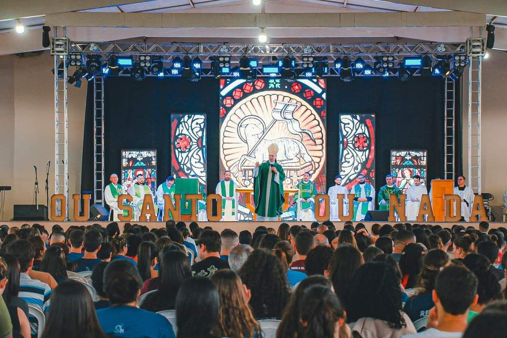
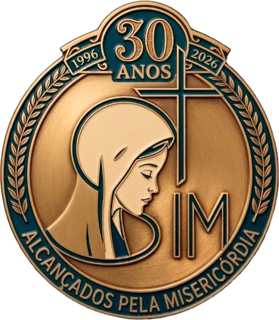
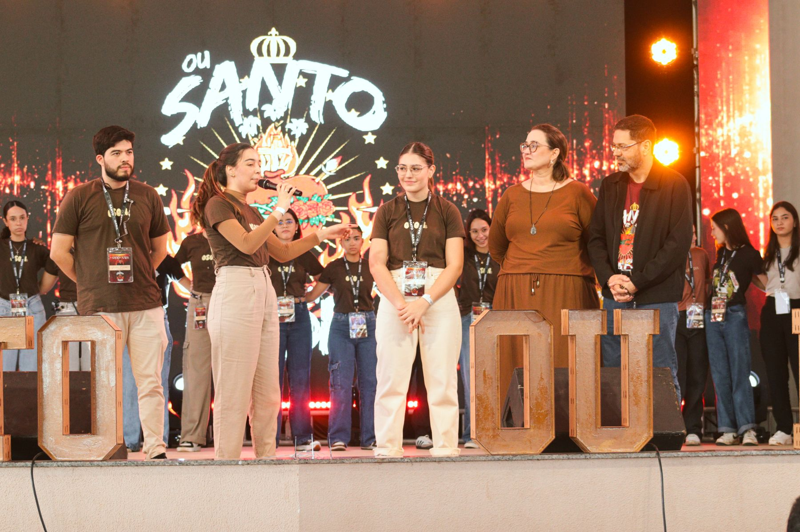
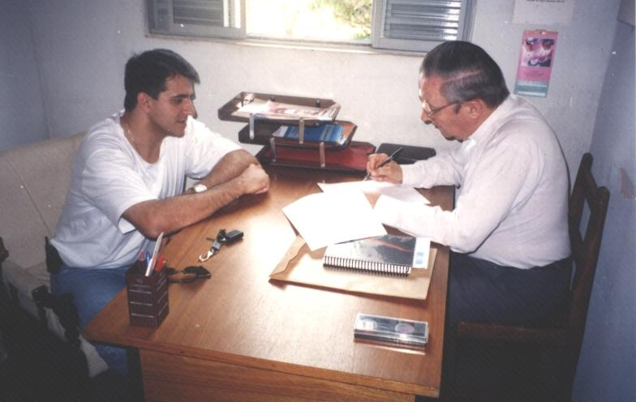

2026 é Ano Jubilar para a Comunidade SIM: 30 anos alcançados pela misericórdia de Deus.



A SIM não foi pensada: nasceu dos frutos da evangelização. Tudo começou com um grupo de jovens em Dracena e com o primeiro Seminário de Vida no Espírito Santo, e aos poucos o Senhor nos confiava a sua obra.
Nossas obras são sustentadas pela doação de irmãos. Todo mês você recebe uma revista formativa em casa.
“Quem ajuda na evangelização tem os mesmos méritos do evangelizador.”Quero ser sócioDeixe sua intenção. Ela será apresentada nos grupos de oração, na adoração e na Santa Missa.
Enviar pedidoLivros, terços, camisetas e artigos religiosos. Cada compra ajuda a sustentar a evangelização.
Visitar a loja SEMINÁRIO DE VIDA NO ESPÍRITO SANTO
SEMINÁRIO DE VIDA NO ESPÍRITO SANTO